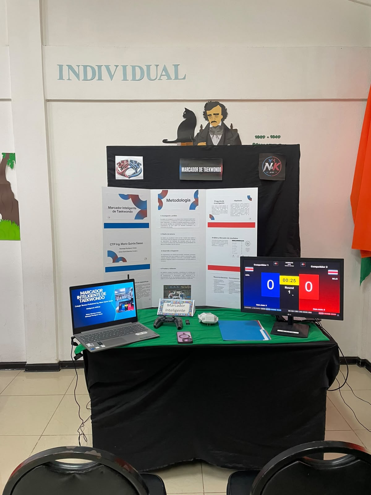

Demasiadas tareas separadas
En un torneo, el operador puede necesitar marcador, controles, replay, visualización para público y gestión del siguiente combate. Si todo está separado, la experiencia se vuelve lenta y propensa a errores.
Una historia construida entre dos personas, una necesidad real del taekwondo y la idea de hacer todo más claro, humano y confiable dentro del torneo.

N&K Scoring fue creado por Nohan y Kiki. Nació entre conversaciones, pruebas y el deseo de resolver algo que en torneos se sentía repetitivo: demasiadas tareas separadas, procesos poco claros y una experiencia que no siempre ayudaba al operador en el momento más importante.
Queríamos algo distinto. Un sistema que no se sintiera pesado ni confuso. Uno que uniera el marcador, la consola central, el replay, los controles, la gestión de combates y las llaves del torneo dentro de un mismo flujo.
Entre ideas compartidas, pruebas largas y mucho cariño por lo que estábamos construyendo, el proyecto fue creciendo con una intención simple: crear algo útil, bonito y confiable para competir mejor.
La necesidad era concreta: operar combates y torneos con más claridad, menos pasos y una interfaz que realmente ayudara bajo presión.
En un torneo, el operador puede necesitar marcador, controles, replay, visualización para público y gestión del siguiente combate. Si todo está separado, la experiencia se vuelve lenta y propensa a errores.
En competencia no hay tiempo para adivinar. Por eso N&K Scoring fue diseñado para mostrar puntajes, round, tiempo, Gam-Jeom y acciones principales de forma legible e inmediata.
Más que acumular funciones, queríamos una herramienta que se sintiera lógica. Que cualquier persona pudiera aprender a usarla con confianza y sin una curva innecesaria.

Con N&K Scoring obtuvimos el primer lugar en la ExpoTécnica 2026 de nuestro colegio. Fue un momento muy importante porque confirmó que el proyecto resolvía una necesidad real y que tenía valor más allá del aula.
Actualmente seguimos fortaleciendo el sistema y preparándolo para la etapa regional, afinando tanto la propuesta como la experiencia de uso.
Somos los creadores de N&K Scoring. Este proyecto nació de una idea compartida, de muchas horas de trabajo juntos y de la ilusión de construir algo que de verdad ayudara dentro del taekwondo.
Seguimos desarrollándolo con la misma intención con la que empezó: que la tecnología acompañe al torneo, facilite la operación y se sienta natural para quien la usa.